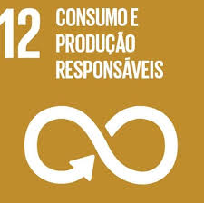
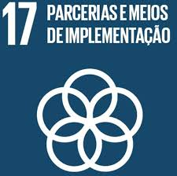

Endereço: Rua Professora Maria Eliza Quadros Câmara, 77, Bragança Paulista, SP
Telefone: (11) 96644-7592
Email: thomashurtado@outlook.com.br
LinkedIn: Thomas Hurtado
Resumo Profissional
Desenvolvedor dedicado, com foco em backend e em constante busca por aprender novas tecnologias...
Experiência
Unect Jr (Empresa Júnior) / Assessor de Projetos
2024 - Atual
- Desenvolvimento de backend para projetos de sites...
Kumon / Auxiliar
2018 - 2019
- Correção de atividades de matemática e inglês
Formação
UTFPR / Ensino Superior
2021 - Atual
Graduando em Engenharia da Computação...
Habilidades Técnicas
- Linguagens de programação: JavaScript, Python
- Frameworks & Tecnologias: Node.js, Express...
Certificações e Cursos Concluídos
- Certificação AWS (Curso) - Udemy (Em andamento)
Objetivos de Desenvolvimento Sustentável (ODS)
 ODS 12: Consumo e produção responsaveis
 ODS 17: Parceria e meios de implementação